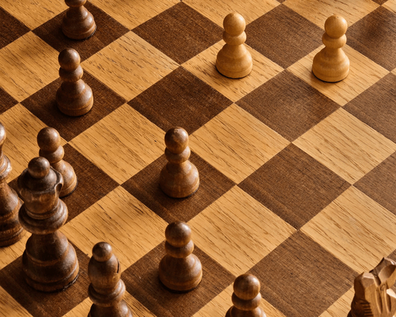
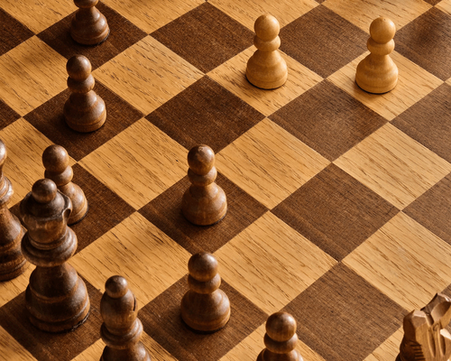

Hobbies
Zijlen
Ik heb altijd een intresten gehad in zeilen;
Dit kwam door dat er in mijn familie velen waren met een ervaring in zeilen en hierdoor zat ik zelf ook van een jonge leeftijd op zee met mijn familie
Sinds dat ik 12 jaar oud was werd bijna elke zomer besteed aan zijl kampen waar leerde zijlenen ik vele vrienden maakte met dezelfde interesses als mij
De verste tocht dat ik tot nu toe heb gemaakt met een boot is België tot in Spanje; dit was alleen mogelijk doordat we kennissen hadden met een boot groot genoeg voor dit mogelijk te maken voor deze redenen hebben we zelf ook een boot aangekocht
Afgelopen jaar hebben we als gezin een zeilboot aangekocht waardoor het mogelijk werd om grote afstanden te zijlen maar vooraleer we konden gaan zeilen moest er veel gebeuren aan de boot
De boot was verouderd tot het punt waar hij niet meer zeevaardig kon genoemd worden maar naar 2 jaar werken is deze eindelijk terug in staat om te varen
MuurKlimmen
Sinds dat ik 8 jaar oud was heb ik in clubs leren muurklimmen
Dit was de eerste sport die ik wekelijks deed en mezelf dus ook in treinden en dit zorgde ook voor resultaat.
In de club waar ik dit deed werd elk jaar een wedstrijd gehouden voor alle klimclubs in omstreken
Bij deze wedstrijden presteerden ik altijd zeer goed tot het punt waar ik meerdere gouden medailles heb behaald toen ik jong was.

elektronica
Tijdens mijn studies in elektriciteit en elektromechanische systemen heb ik enorm veel interesse gekregen in elektronica en ben ik er dus ook zelf ingevlogen
Mijn eerste grote project is een schaakbord dat de zeten van de speler opslag zodat deze later geanalyseerd kunnen worden met behulp van een computer
Hiervoor moet ik me verdiepen in verschillende dingen zoals de elektronische onderdelen die ik hiervoor nodig heb,
het maken en ontwerpen van printplaten, het werken met een raspbarry pi, de toepassingen van de verschillende types in RFID
Dit houdt allemaal zeer veel zelfstudie in en dus ook veel tijd.
Maar hierdoor heb ik ondertussen al kunnen beslissen hoe ik het ga maken en heb al aan meerdere dingen klaar:
de elektrische schema’s, een Inventor tekening met de behuizing en plaatsing van alle onderdelen.
 
